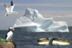
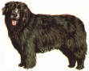
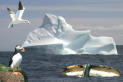
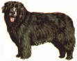
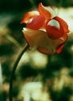

Newfoundland and Labrador
Quaerite Prime Regnum Dei (Seek ye first the kingdom of God)
 



Geographical Information
The province consists of two sections, the island of Newfoundland, and the mainland portion of Labrador. The most easterly Canadian province, the island is situated at the mouth of the Gulf of St. Lawrence. The province lies between the 46th and 61st parallels.
Other Information
- Population: 521,542 (2019)
- Languages Spoken (2016): English - 98.5%; French - 0.4%; Others - 1.1%
- Confederation with Canada: March 31, 1949
- Capital City: St. John's
- Average Temperatures: Winter: 0°C to –15°C; Summer: 15°C to 25°C
Provincial Flower: Pitcher Plant (Sarracenia Purpurea)
Although it was not declared the provincial flower of Newfoundland and Labrador until 1954, this strange plant appeared on the Newfoundland penny during the late 1880s. The pitcher plant is found primarily in bogs and marshland throughout the province. It has a large wine-red flower and hollow pitcher-shaped leaves are attached to the base of the stem. An insectivorous plant, it feeds off insects that become trapped inside when the leaves fill with water
Provincial Tree: Black Spruce (Picea Mariana)

Designated as the provincial tree in November 1993, it is also known as the bog spruce. Although dark bluish-green in colour, it is called the "black" spruce to distinguish it from other types of spruce trees. An evergreen coniferous tree, it is tolerant of nutrient-deficient soils, growing primarily in areas that have poor drainage. The black spruce is the most abundant tree in Labrador and appears on the Labrador flag.
Provincial Bird: Atlantic Puffin (Fratercula Arctica)

The puffin has officially been the provincial bird of Newfoundland and Labrador since 1991. It is a member of the auk family. The puffin is also called the sea parrot because of its multi-coloured beak. Marine birds that inhabit cliffs, puffins can dive 50 metres underwater in search of food. Their diet consists mostly of small fish such as caplin and herring. Their wingspan is approximately 55 cm., and they can fly up to 80 km. per hour. They live approximately 25 years, usually mate for life, and produce one egg per year. Witless Bay, Newfoundland, is home to the largest puffin colony in North America.
Provincial Mineral: Labradorite

A mineral discovered in northern Labrador, it was first described by Moravian missionaries in the late 18th century and brought to Europe. It is prized for its beautiful shifting iridescent colours of blue, green, grey and bronze. Found largely in the Nain area of Labrador, it is being mined at Ten Mile Bay by the Labrador Inuit Association. Labradorite commonly used in ornamentation for buildings and in making jewelry.
Provincial Tartan

The provincial tartan was developed in 1955 by Sam Wilansky, a clothing store owner in St. John's. The tartan is predominantly green with gold, white, brown and red bands of colour. He chose most of the colours to correspond with The Ode to Newfoundland.